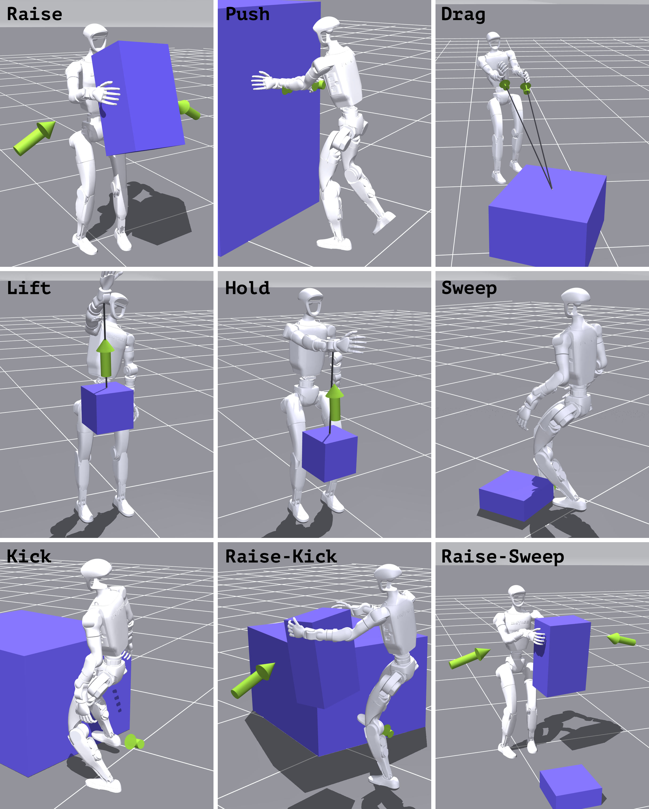

Ctrl-F: Force as an Interface for Humanoid Loco-Manipulation
Paper Video Code (upon acceptance)
A Unitree G1 carries a 1 kg box, walks, and kicks an 8 kg cart. One frozen motion–force tracker executes both; a high-level policy supplies the force commands.
Abstract
Humanoid motion tracking has scaled to general policies that reproduce diverse human motion, but the resulting behavior is in free space: the tracker knows where the body should be, not how it should interact with the environment. Other work makes the object part of the objective, yet abstracts that interaction to contact or geometry, which leaves the demanding cases under-explored. We argue that force is the natural command channel missing between motion imitation and object interaction, the signal that says not just where to make contact, but how hard.
We present Ctrl-F, a hierarchical motion–force framework that augments motion tracking with an explicit force command, a 3-D force at each designated contact body such as a hand or a foot. A unified motion–force controller tracks the reference motion while applying the commanded force to the world, and a high-level force planner issues that command online from object state and proprioception.
In simulation and on hardware, Ctrl-F completes loco-manipulation that demands large, sustained interaction force and adjusts its command online as the load changes, both out of reach of a force-blind tracker. On hardware it drags, pushes and raises with the hands and kicks with a foot, reaching 20 kg on the pushed and the kicked box where the baseline moves nothing loaded, and it keeps dragging when weight is added mid-task.
A pose cannot say how hard
The same motion tracker, the same box. Empty, it lifts. With 2 kg inside, the hands slide and the box stays on the floor: nothing in a position reference specifies how hard to squeeze.
The baseline throughout is SONIC, a general motion tracker with public G1 weights and no force channel.
Method
Stage 1, a motion–force tracker trained without objects. During training we sample a force command and apply the opposite wrench to the hand or foot. Holding the reference under that wrench means exerting exactly the commanded force on the world, so the tracker learns to realise any command it is given.
Stage 2, a high-level force planner. With the tracker frozen, a second policy reads the object state and proprioception and outputs one 3-D force per contact body. It is supervised by an analytical force model and refined by reinforcement learning scored on the object.
Deployment. Neither policy observes a force sensor or the object's mass. Object pose comes from AprilTags; the command still adapts, from how the object moves.
A commanded force is a real force. A cord from the hand to a crane scale: 10, 20 and 30 N commanded read 8.8, 17 and 25 N on the scale.
What the tracker learned, on a static hold at 30 N. A wrench alone drags the hand down; adding the matching command restores the pose; the command alone lifts the hand.
Hardware
Unitree G1 with onboard sensing and AprilTag object pose. SONIC and Ctrl-F run the same clips on the same objects. Loads are the weight added to the object.
Drag a crate
Wheels locked. The baseline moves only the empty crate; Ctrl-F moves all three.
Push a box
SONIC moves neither box; Ctrl-F pushes both.
Raise a box, 2 kg
The baseline's hands slide past; Ctrl-F squeezes and lifts, 9 of 10 trials.
Sweep a box, 1 kg
The baseline cannot balance on one leg and never moves the box.
Stand kick
A foot is a force body too. SONIC cannot stand on one leg; Ctrl-F kicks the empty box and the 20 kg one.

The composite task: carry a 1 kg box, walk, kick an 8 kg cart.
Load changes mid-task
Weight is added while the robot is already working. The planner's command follows the load, with no force sensor in the loop.
Drag, weight added
The baseline stops. With the command frozen at its starting value the robot slows. With the planner it holds its pace: the two Ctrl-F arms differ only in whether the command may change.
Hold a box on a rope, 1 + 1 kg
Same network. With the command held at zero the hand sinks as weight is added; with the planner it stays at the reference height.
Simulation
Nine tasks in three families: hands, feet, and hands with feet. One low-level and one high-level policy per family. Object mass is randomised between episodes and changed inside them.


Load sweep. Force-blind arms fail within a quarter of the nominal mass; Ctrl-F stays above 90 % completion across the range.

A mass step mid-episode. The commanded force follows the load, with neither mass nor force observed.
Video
Citation
@inproceedings{ctrlf2027,
title = {Ctrl-F: Force as an Interface for Humanoid Loco-Manipulation},
author = {Anonymous},
booktitle = {IEEE International Conference on Robotics and Automation (ICRA)},
year = {2027}
}
Built on mjlab and MuJoCo Warp.